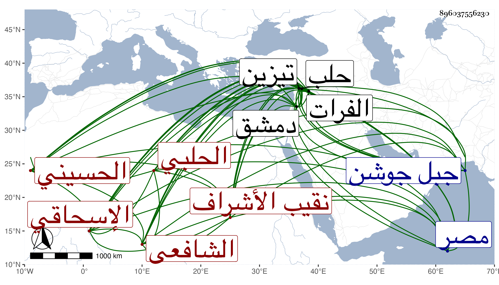

0902Sakhawi.DawLamic.ITO20230111-ara1.EIS1600.896037556230
Biography ID: 896037556230
أحمد بن أحمد بن محمد بن أحمد بن علي بن محمد بن علي بن محمد بن عبد الله ابن جعفر بن زيد بن جعفر بن إبراهيم بن محمد الممدوح بن أحمد بن محمد بن الحسين بن إسحاق بن جعفر الصادق بن محمد الباقر بن زين العابدين علي بن الحسين ابن علي بن أبي طالب العز أبو جعفر بن الشهاب أبي العباس بن أبي المجد الحسيني ثم الإسحاقي الحلبي الشافعي نقيب الأشراف وابن نقيبهم وابن أخي نقيبهم ووالد نقيبهم وسبط الإمام الجمالي أبي إسحاق إبراهيم بن الشهاب محمود الكاتب . ولد في سنة إحدى وأربعين وسبعمائة بحلب ونشأ بها فحفظ القرآن واشتغل كثيرا في النحو وغيره على شيوخ وقته كأبي عبد الله المغربي الضرير وسمع على جده لأمه والقاضي ناصر الدين بن العديم وغيرهما واستجاز له جده لأمه الوادياشي وأبا حيان والميدومي وأحمد بن كشغدى وآخرين من دمشق ومصر وغيرهما ، وحدث سمع منه البرهان الحلبي وابن خطيب الناصرية وآخرون منهم البهاء بن المصري وقرأت عليه الاستيعاب بسماعه له منه بإجازته من الوادياشي ، وروى عنه شيخنا بالإجازة وخرج عنه في بعض تخاريجه وكان أوحد وقته زهدا وورعا وصيانة وعفة وجمال صورة ذا وقار وسكينة ومهابة وجلالة وسمت حسن لا يشك من رآه أنه من السلالة الطاهرة واقتفاء لآثار السلف متمسكا بالسنة استقر في النقابة بعد والده وكذا ولي مشيخة خانقاه ابن العديم مدة ثم امتنع من مباشرتها وانفرد برياسة حلب حتى كان قضاتها وأكابرها يترددون إليه ولا يردون له كلمة ، كل ذلك مع مشاركة جيدة في الفضل ويد في العربية ونظم جيد ونثر رائق وحسن محاضرة في أيام الناس والتاريخ وحلاوة الحديث ، وهو من حسنات الدهر ، ومن نظمه مما أنشدناه البهاء بن المصري عنه :
| يا رسول الله كن لي | شافعا في يوم عرضي |
| فأولوا الأرحام نصا | بعضهم أولى ببعض |
وقوله وقد ورد بين زمزم والناس يتزاحمون عليها :
| وذي ضغن تفاخر إذ وردنا | لزمزم لا بجد بل بجد |
| فقلت تنح ويح أبيك عنها | فإن الماء ماء أبي وجدي |
وقوله :
| يا سائلي عن محتدي وأرومتي | البيت محتدنا القديم وزمزم |
| والحجر والحجر الذي أبدا يرى | هذا يشير له وهذا يلثم |
في أبيات . قال البرهان الحلبي نشأ نشأة حسنة لا يعرف له لعب واستمر على ذلك إلى أن مات ملازما للخير محافظا على الصلاة في أول وقتها مع الطهارة في البدن والثوب واللسان والعرض قال لي أنا أقدم مصالح الناس على مصلحتي قال وكان أديبا بليغا كاملا ذا سمت وهيبة وخشمة مفرطة لم أر بحلب أكثر أدبا ولا أحشم منه لا من الأشراف ولا من غيرهم مع الذكاء وحسن الخلق وحسن الخط والفهم الحسن . مات بعد كائنة التتار بحلب في شهر رجب سنة ثلاث بمدينة تيزين وكان قد تحول إليها في الكائنة وبينها وبين حلب مرحلتان إلى جهة الفرات ثم نقل إلى حلب فدفن بمشهد الحسين ظاهرها بسفح جبل جوشن عند أقاربه وأجداده رحمه الله وإيانا ، ذكره ابن خطيب الناصرية مطولا وتبعه شيخنا في أنبائه ومعجمه باختصار وليس عنده فيه في نسبه بعد على الثاني محمد ولا إبراهيم قال وجده محمد والد جعفر يعني الممدوح أول من ولي نقابة الطالبين بحلب في أيام سيف الدولة وأما في الأنباء فساقه كما تقدم وهو في عقود المقريزي .
